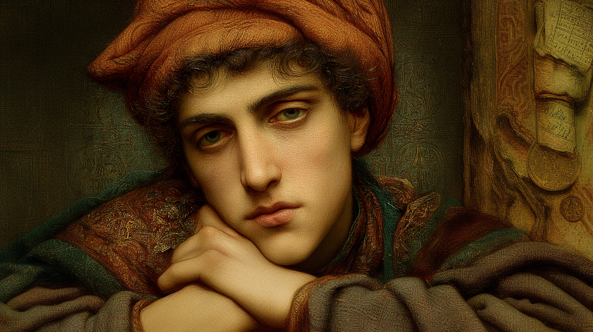
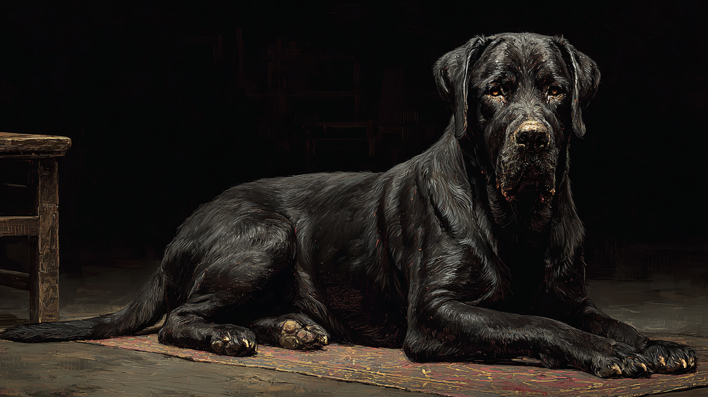

Redcap — Moneylender — The Listener — Keeper of Inconvenient Knowledge
"He pays attention to what people say and how they say it. Whether he uses this to help or exploit varies by situation."

Erasmo il Genova was born in 1177 at or near Harco, the Domus Magna of House Mercere, to a family with complicated connections to the House. His lineage traced to Odysseus — or so the family claimed — but not through the legitimate Mercere bloodlines recognised by senior House magi. This made him technically eligible for training while marking him as socially inferior within House politics from the beginning. The Gift manifested around age five. Claudius of Mercere, stationed at Incrocio in the Levant and needing an apprentice, took him on. Neither had better options. Both made the best of it.
Incrocio — "Crossroads" — was a small Hermetic covenant serving primarily as waystation and message hub along Mediterranean trade routes. Its mixed population of Gifted Mercere magi, unGifted Redcaps, and covenfolk from across Mediterranean cultures gave the young Erasmus his facility with languages and his understanding of cross-cultural commercial exchange. Claudius taught him Hermetic Arts, multiple languages, and the etiquette required of a messenger who might enter any covenant in Europe.
What Claudius did not teach him — or chose not to — was where lending money to people in need crossed into exploitation. By age fifteen or sixteen, Erasmus had begun lending small amounts of silver to covenfolk, visiting merchants, other apprentices. By his gauntlet in 1197, he had established a reputation and was generating modest income. The rates were high. People resented paying them. He rationalised: he was providing a service, taking risk, charging fair compensation.
Two years post-gauntlet, delivering messages near Toulouse, Erasmus had an encounter with a powerful local noble that turned dangerous the following morning. The noble, consumed by terror and guilt, intended to confess everything to his priest — and name Erasmus. The Church would burn him. The Order might not intervene for a minor Mercere over a mundane nobleman of substance.
That night, unable to sleep, Erasmus dreamed of a black dog.
The dog sat at the foot of his bed, watching with amber eyes. "He wants to tell the priests. Confess his sin. Name you as the demon."
"How?" Erasmus managed.
The dog: "Write to him. A small payment, ongoing, to demonstrate good faith. Both of you keep silent. Both of you survive. Mutual protection."
"That's blackmail."
The dog: "That's survival. I'm Infidus. I can help you."
He woke to find a large black mastiff sitting at the foot of his bed, watching him with amber eyes. He wrote the letter that morning. The noble paid. Has paid ever since. Infidus has accompanied Erasmus everywhere in the four years since — and the nature of what was agreed that night remains, deliberately, unexamined.
The Toulouse incident established a template. Not immediately, not deliberately, but over subsequent years it recurred: identify someone with a secret they would pay to protect, offer silence as a service, frame it as mutual protection rather than coercion. By 1205 he runs two parallel operations — conventional usury and what he thinks of, when he thinks of it at all, as "blackmail-loans." The Mercere messenger role provides access, trust, mobility, and institutional protection that makes him considerably more dangerous than his physical limitations would otherwise allow.
The clearest possible profile: exceptional social and intellectual capability combined with comprehensive physical limitation. Intelligence, Presence, and Communication at +2 and +3 describe someone who is genuinely brilliant at understanding people and making them feel understood. Stamina at −2, combined with the Tragic Stamina flaw and Poor Eyesight, describes someone who has survived entirely by ensuring confrontation never becomes the solution. He is twenty-eight and feels older.
Five feet eleven inches, lean, with the slightly hunched posture of someone who rides frequently and the persistent squint of poor eyesight in bright Mediterranean light. Olive-toned skin from Italian-Greek heritage. Hands that are surprisingly elegant — a moneylender's hands, precise with coin and quill. His face is pleasant rather than striking: regular features, brown eyes that water in bright light, brown hair kept neat and unremarkable. The habit of leaning in when speaking creates an impression of either attentiveness or invasion, depending on what the listener wants to believe. The red cap is always present.
A large black mastiff accompanies him everywhere. Unusually well-behaved, almost unnaturally so. Watches people with what seems like comprehension. Erasmus speaks to it in Italian, treating it as companion rather than pet.
Listener +2: Genuinely pays attention to what people say and how they say it. This is not purely manipulation technique — he is actually interested in understanding people. What do they want? What do they fear? What motivates them? His magical focus on Motivations reflects this fundamental curiosity. He notices things others miss: the hesitation, the redirect, the too-casual tone. He has never decided whether this gift is a blessing or a curse, because the question implies it could stop being useful, which it cannot.
Carouser +1: Enjoys taverns, social drinking, and the camaraderie of shared wine. Drunk people are more forgiving of that inexplicable unease the Gift produces. Useful information flows in taverns. He maintains good tolerance — Carouse ability well developed — and rarely drinks to true excess. Control is important.
Conflict-Averse −2: Not cowardice. A rational assessment that open conflict is costly across every dimension his profile occupies — physical, social, institutional, reputational. He has learned to survive through ensuring all parties believe they are getting what they want, or at minimum that resistance costs more than acquiescence. When he takes risks, they are calculated. When he avoids fights, it is because he has already won by other means.
* Muto effective score includes +2 from Puissant Muto. Corpus marked as Corrupted Arts — see Flaws.
Corpus at effective score 5 is Erasmus's highest Form, but it comes with the Corrupted Arts flaw: the Art has been shaped by infernal influence to favour selfish application. When he uses it to find someone for exploitation or sense vulnerability for personal gain, he casts at +3 effective score and earns experience points. When he uses it to genuinely heal or help without expectation of return, he takes −3 and loses XP already earned. The magic has been taught which way it prefers. Whether this predated Infidus or emerged from the Toulouse bargain is one of several questions he has decided not to investigate.
Bargain 5 is the highest single ability on his sheet, which is itself a statement. Combined with Guile 3, Etiquette 3, Carouse 3, Civil and Canon Law 3, and Common Law 3, he is comprehensively equipped to conduct and defend financial transactions across both ecclesiastical and secular legal frameworks. He understands contracts, lending, interest computation, and the legal grey zones between them in three separate legal traditions. This is not incidental skill. It was deliberately developed.
His spell repertoire reflects two priorities: understanding people's inner states, and changing how he or the world appears. There is nothing here for open combat and nothing here for grand magical projects. Everything serves the messenger, the negotiator, the man who needs to know what room he's actually in.

Large black mastiff. Amber eyes. Unusually well-behaved, almost unnaturally so. Watches people with apparent comprehension. Has been with Erasmus since Toulouse, 1199. Speaks in dreams when it speaks at all. In waking hours, it simply watches.
The Demonic Familiar bond provides Erasmus with supernatural senses he cannot supply himself — particularly useful given his poor eyesight. Infidus notices who is anxious, who is lying, who is meeting secretly. The dog masks the infernal taint on his Corrupted Arts, making his magic appear normal to most detection. It provides company in the isolation that the Gift and his other characteristics impose.
What it wants — what the entity that chose the form of a black mastiff actually wants from a philosophical sailing covenant in the North Sea — is genuinely unclear. It appeared to help him survive Toulouse. It has not, in four years, asked for anything explicit in return. It seems pleased by his joining Sjórseiðr, which is its own mystery.
He has decided the dog saved his life, provides companionship in isolation, and helps him survive in a world hostile to who he is. These things are true. Whether they constitute the complete account is a question he has stopped asking. — Internal note, Sjórseiðr archive
Erasmus talks to Infidus in Italian when he thinks no one is listening. The dog does not answer aloud. He acts as if it does.
By 1205, Erasmus runs two parallel commercial operations generating roughly equal income. They are related but distinct: not everyone he lends to is compromised, not everyone compromised becomes a borrower.
| Operation | Method | Client Awareness | Status |
|---|---|---|---|
| Straight Usury | Loans at high interest to people with genuine need — failed harvests, medical expenses, business shortfalls. Rates are high. Repayment is reliable. People resent it and pay anyway. | Known. This is his public business — known, legal, socially distasteful but not unusual for a Mediterranean moneylender. | Ongoing. Existing debtors pay via other Redcaps. New loans made at ports and covenants encountered. |
| Blackmail-Loans | Loans to people with compromising secrets. The loan is technically voluntary; refusal means exposure. "Interest" is silence. Framed internally as mutual protection. | Unknown. Each party believes they are isolated — Erasmus ensures they cannot coordinate. The Toulouse noble has paid since 1199; several others since. | Ongoing. Erasmus is aware that joining Sjórseiðr represents a change in operating environment — whether it represents a change in operations has not been decided. |
The Redcap function provides structural advantages that make both operations considerably more dangerous than his physical limitations would otherwise permit. Access: He enters covenants legitimately, reads correspondence, learns covenant business. Trust: Redcaps are supposed to be neutral — people lower their guard. Mobility: Constant travel; victims cannot easily coordinate across wide geography. Protection: Hindering a Mercere messenger carries Order-wide consequences. Even people who suspect his activities cannot easily retaliate without proving their accusations, which requires admitting their own compromises. He did not design this system. He recognised it and used it.
Erasmus's family claims descent from Odysseus — not through any of the recognised Mercere legitimate bloodlines, which is the whole problem. The manifestation is Unerring Path: a constant passive awareness of direction and distance to any place he has been. This is genuine and practically useful; it has made him an exceptionally reliable messenger in terms of navigation. It also means every place he has been remains connected to him, a thread he could follow back. There is no escape from geography.
The Odysseus heritage in temperament rather than bloodline: cunning over heroism, patience over force, the preference for the ten-year route home over the direct path. His parens Claudius noted, with what sounded like disappointment, that Erasmus approached problems the way Odysseus approached the Cyclops — looking for the angle, the deception, the escape that required no direct confrontation. Claudius intended this as criticism. Erasmus took it as description.
Corpus is his strongest Form and his most compromised one. The infernal influence — whether pre-existing or acquired at Toulouse — has shaped the Art toward selfish application. When he uses Corpus to find people for exploitation, to sense vulnerabilities for personal advantage, to serve his own interests, he casts at +3 effective score and the Art rewards him with experience points. When he uses it for genuine healing, for helping without expectation, the reverse applies: −3 penalty, loss of accumulated XP.
This is, in its way, comprehensive. The magic itself has been taught which way it wants to go. Whether this reflects demonic corruption of something pure, or reveals an orientation that was already present before Infidus, he does not examine. The question would require acknowledging things about the interval between the dream and the morning that he prefers to leave blurred.
The central tension in Erasmus's current life, and the reason he is on a ship rather than continuing his Mediterranean circuits. Solving is frustratingly immune to manipulation — he engages only philosophically, treats everyone as an intellectual equal worth debating, and appears constitutionally unable to notice social subtext. He has treated Erasmus with casual friendliness since their first meeting in Bruges in 1200, without any apparent awareness that he should be suspicious.
This is both refreshing and destabilising. Here is someone who sees through people's motivations as a professional habit and remains naively trusting anyway. Someone who might be, in the specific sense Erasmus finds most uncomfortable, actually good. Solving represents what Erasmus might have been without the compromises, or what he might still become if he made different choices. The cognitive dissonance is considerable and unresolved. When Solving's visions lead somewhere dangerous, Erasmus will try to protect him — and has not fully unpacked whether this is friendship, investment, or something he simply cannot categorise.
Two people shaped by trauma and survival, whose paths diverged at the point where he turned toward exploitation and she turned toward protection of others. Both are outsiders who don't quite fit. Both have learned to read rooms very quickly. She is Self-Protective −2, reckless with her own safety; he is Conflict-Averse −2, careful with his. She might see through him; he might see through her. This is either the basis for mutual understanding or mutual suspicion, and 1205 is too early to know which.
She left her parens to find herself, uncompromised. He carries compromises everywhere. She is direct to the point of impatience; he is oblique by reflex. Her curiosity will lead her to ask questions he cannot answer easily. His Listener trait will make him genuinely useful to her — he notices things about people, including her, that she has not noticed about herself. Whether this becomes trust or suspicion depends on whether she asks the questions before or after she knows him better.
Distant, ongoing, uncomfortable. Claudius suspects something is wrong and hasn't identified what. Erasmus has avoided the conversation since joining Sjórseiðr. The debt of a parens to a filius and vice versa weighs on him in ways he could not fully articulate — Claudius gave him training and institutional access without, apparently, noticing what he was becoming. Whether this makes Claudius culpable or merely oblivious is another question he has decided not to pursue.
Frozen in mutual silence, each resenting the other, each maintaining the arrangement because the alternative is worse. None of them know about the others. All of them are, in Erasmus's private accounting, people he has harmed while telling himself he was providing a service. He does not examine this accounting often. When he does, he closes it again quickly.
Erasmus arranged ship financing through Bruges contacts when Solving began actively recruiting — genuinely useful, structuring the deal cleanly, representing the covenant's interests fairly. He wants this relationship to work. He arranged the financing on the borrowing side, not the lending side. The terms are commercial rather than exploitative. He has noticed this and found it unfamiliar.
His reasons for joining are genuinely multiple and he cannot rank them:
All of these are simultaneously true. He does not know which will prevail. Infidus watched the arrangement with what appeared to be approval, which is either reassuring or deeply concerning, and he has decided not to determine which.
Erasmus arrives in Bordeaux as the last founding member to join, carrying ship financing, a network of contacts across Mediterranean and North Sea circuits, and every complication itemised above. He brings genuine commercial expertise, genuine social intelligence, and the genuine uncertainty — perhaps the most honest thing about him — of someone who does not yet know whether he is joining a covenant or escaping one, and suspects the answer is both.
Erasmus the Hound is a man who has been making the pragmatic choice at every fork in the road since he was fifteen years old, and has arrived at twenty-eight in a condition that is entirely coherent, entirely functional, and genuinely troubling on examination. Each individual decision was defensible. The aggregate is something else. He knows this. He has not decided what to do with knowing it.
What he brings to Sjórseiðr is real: financial expertise, commercial contacts, messenger network access, social intelligence, and the specific capability of understanding what people actually want as distinct from what they say they want. The fleet needs someone who can manage covenant finances, negotiate in ports, and read a room before Solving walks into it philosophically unprepared. Erasmus can do all of this, and can do it well.
He is not certain. This uncertainty is recent — before Sjórseiðr, the answer was survival, income, and the management of ongoing complications. He is beginning to suspect those were means rather than ends, and that he has never clearly formulated the ends. Solving's Epicurean framework, which he has been absorbing in philosophical correspondence for five years, keeps suggesting that what he actually wants is tranquility — freedom from the fear and the entanglements and the web of mutual assured destruction he has been spinning for himself. The irony that he has been reading Epicurus while simultaneously building the most Epicureanly condemned life possible is not lost on him.
He joined a covenant built on philosophical idealism with a demon for a dog and blackmail debtors across two tribunals. He wants the idealism to work. He cannot yet guarantee that wanting it is enough. — Internal note, Sjórseiðr archive; author's name withheld from this record
This dossier contains information regarding ongoing Infernal entanglement and two active commercial operations of questionable legal and ethical status. Access to this record is recommended only for covenant members with direct need to know. Solving Epicurusson has read it. He returned it without annotation, which was itself an annotation. Khalida bint Tariq is the only other member who has been shown this file. She said: "At least he knows what he is. That's further than most." Astrid Grásula has not seen it. Whether she should is an open question.